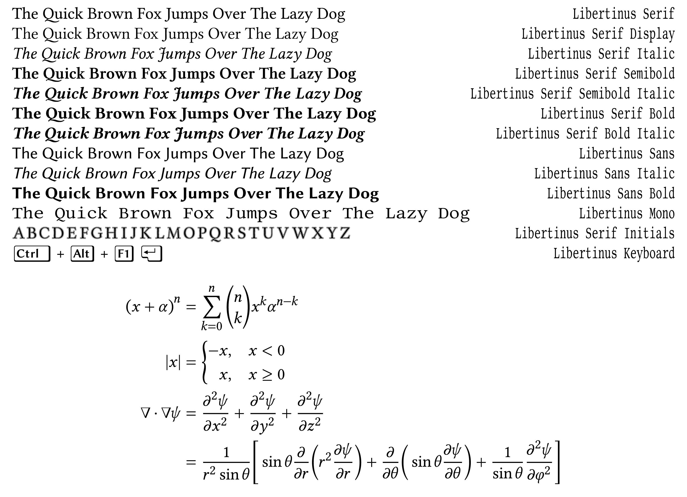

Libertinus is a sophisticated and versatile font family that serves as a fork of the well-known Linux Libertine and Linux Biolinum fonts. Designed to provide an improved and more polished alternative, Libertinus refines the typographic details and enhances compatibility with modern typesetting systems. It includes a comprehensive range of styles, from serif to sans-serif and monospaced variations, making it suitable for a wide variety of professional and academic applications. Additionally, it features extensive Unicode coverage, including support for mathematical symbols, Greek, Cyrillic, and other scripts, making it a popular choice for scholarly publishing and technical documentation.
One of the key advantages of the Libertinus font family is its emphasis on quality and open-source accessibility. Developed using modern font development tools such as FontForge and maintained by an active community, it benefits from continuous improvements in spacing, kerning, and hinting. Libertinus Serif, the most prominent style, offers a classic yet refined appearance reminiscent of traditional book typefaces, while Libertinus Sans provides a clean, contemporary counterpart. Meanwhile, Libertinus Mono serves as an elegant monospaced option for coding and terminal applications. With its broad character support and careful attention to typographic precision, Libertinus remains a highly regarded choice for users seeking a free and open-source font with professional-grade quality.
Find all of the Libertinus sub-families in this overview.
To contribute, see github.com/googlefonts/libertinus.
